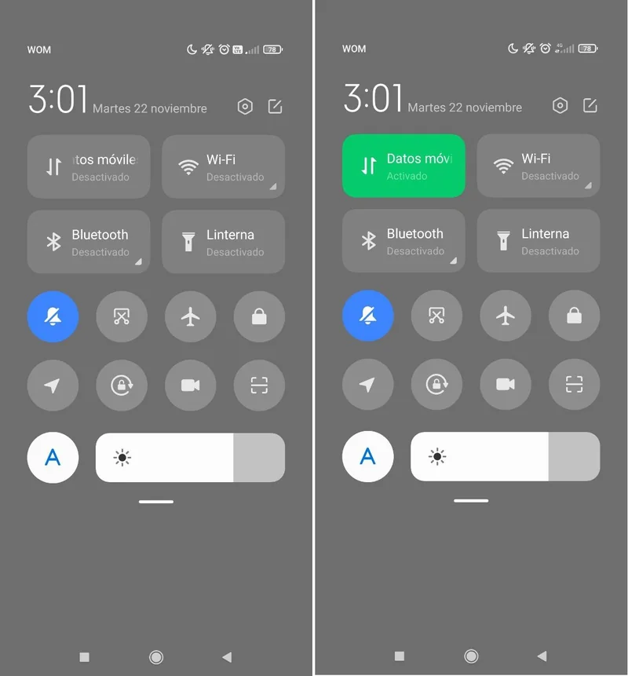
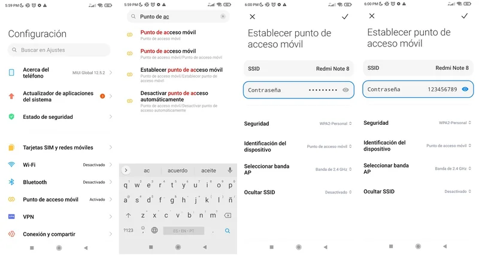
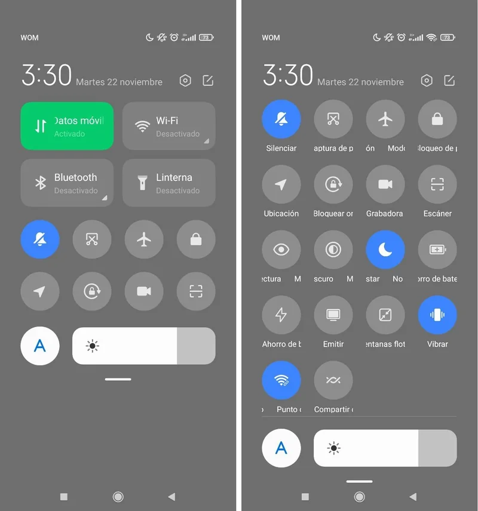

Olá! Esta solução foi escrita por Nicolás, um dos nossos “fuçadores” (ou cacharreros) da SOLE Colômbia.
Eu, Belén, revisei o texto e, embora eu goste de fuçar nas coisas, às vezes tenho dificuldade em entender como elas funcionam. Acho que já tenho uma certa idade e tudo muda muito rápido… quando comecei a usar computadores, eles eram basicamente máquinas de escrever. Mas hoje não são mais! Te encorajo a perder o medo!
O que é criar uma zona WiFi → pessoal?
Você sabe que seu smartphone tem uma conexão com a Internet quase permanente? Geralmente, os planos de celular vêm com um pacote de dados que permite acessar a rede.
Essa conexão pode ficar lenta ou ineficiente e, às vezes, precisa ser restaurada. Mas você também pode querer compartilhá-la com outras pessoas, quer saber como? Continue lendo.
Para que serve?
Pode ser que você queira compartilhar o sinal de Internet do seu plano de dados com outras pessoas. Mas também pode acontecer que, mesmo tendo conexão, as páginas que queremos abrir carreguem com dificuldade, ou a conexão de dados não funcione bem.
Quase sempre, a melhor maneira de fazer tudo recomeçar e funcionar é reiniciar tudo do zero.
Uma vez reiniciado, você poderá compartilhar o sinal de Internet do seu celular para fazer um SOLE com sua comunidade!
O que você precisa?
- Um celular.
- Dados suficientes no seu celular para compartilhar com os outros.
- Generosidade.
Como fazer?
Passo 1 → Reinicie a conexão de dados**
Deslize a parte superior do seu celular para baixo para acessar o painel de controle. Uma vez lá, selecione a opção “Dados móveis”, desligue-a por alguns segundos e ligue-a novamente. Espere um momento para que o celular acesse a rede da operadora e pronto! Sua conexão estará renovada e funcionando corretamente.
Quer saber outro truque? Ative o modo avião; isso fará com que todos os parâmetros do seu celular relacionados ao sinal de Internet sejam reiniciados.

Momento 2: Configure o ponto de acesso móvel**
Vá até as configurações e procure por **“ponto de acesso móvel”** ou **“roteador Wi-Fi”** (em alguns aparelhos aparece como **“Hotspot”**).
Nesse menu, procure a opção **“Configurar ponto de acesso móvel”**. Vários dados aparecerão; por enquanto, só nos interessa configurar o nome da rede [[pt/glossary/conc-wifi|Sinal WiFi →]] que você vai criar e a senha de acesso.
Depois de alterar, pressione o ícone de confirmação (ou o "check") para salvar a nova configuração.

-
Momento 3: Compartilhe a internet
Deslize a parte superior do seu celular para baixo para acessar o painel de controle; você encontrará a opção “Ponto de Acesso Móvel”, “Hotspot” ou algo parecido.
Basta ativá-la para compartilhar o sinal de Internet com quem você quiser.
Se você quer fazer um SOLE, esta é uma excelente solução para garantir que todos os computadores consigam realizar suas pesquisas. Você já sabe que na SOLE Colômbia estamos sempre pensando em como aproveitar os recursos que temos individualmente para levar nossas comunidades a melhorar sua experiência com a Internet… não há nada como usá-la em grupo!

Como saber se esta solução funciona?
Com esta receita, você pode reiniciar as configurações da rede celular do seu aparelho. Isso melhorará a velocidade de navegação e a estabilidade da conexão. Você poderá compartilhá-la com outros celulares e/ou computadores e pesquisar na Internet as respostas para as Grandes Perguntas que motivam o seu SOLE.
Outras possibilidades de Internet
Reiniciar a conexão da rede celular melhorará sua conexão e você poderá navegar um pouco mais rápido, mas a área geográfica onde você está deve ter cobertura da sua operadora.
Esta receita não funcionará se o sinal de telefonia na sua região não for de boa qualidade. Aprender a compartilhar a internet será um passo muito importante para o momento em que conseguirem computadores, pois é mais fácil usar a internet em grupo com telas grandes.
Soluções relacionadas
- Como melhorar o sinal do seu modem? →
- Como melhorar meu sinal móvel com uma lata? →
- Como saber as senhas WiFi do meu celular? →
Lembre-se de que em Voltaje ⚡⚡ você pode encontrar muitas outras soluções para se conectar sem medo de usar a internet em grupo. Anime-se a continuar navegando! Ver mais soluções →